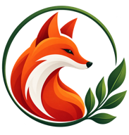
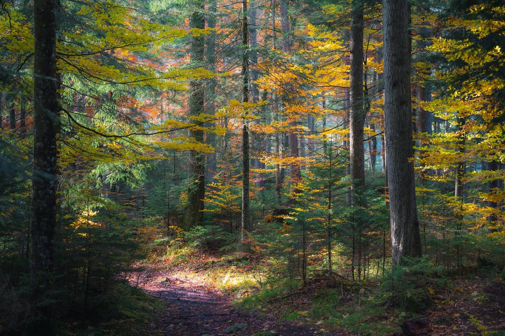

Klein Wild[portret van Timon volgt, liefst buiten en aan het werk]
Over Klein Wild
Daar voelde ik me in mijn kracht: als begeleider van een groep kinderen in het bos, en als degene die zorgt dat alles klopt voordat ze aankomen. Klein Wild heb ik opgezet om precies dat werk te doen, voor BSO's.
Ik woon in Kortenhoef en werk in de Gooi en Vechtstreek. De bosmiddagen voer ik uit samen met lokale scoutinggroepen, die de gecertificeerde leiding leveren. Ik bewaak het programma, de kwaliteit en het contact met jou.
Timon Kool

Waarom
Programma's op de BSO zijn vaak weinig gevarieerd en weinig uitdagend. Medewerkers willen het wel, alleen hebben ze met te weinig collega's te veel werk. Ik zoek het uit, probeer het zelf, schrijf op wat werkte en wat misging, en lever het kant-en-klaar aan.
Waar ik voor sta
Elk draaiboek komt uit een middag die echt gedraaid is.
Dat staat er gewoon in. Dan hoef jij het niet opnieuw uit te vinden.
Met pedagogische onderbouwing, aanpassingen per leeftijd en een plan B.
Partners: [namen van de scoutinggroepen volgen, na hun akkoord]
Maak kennis